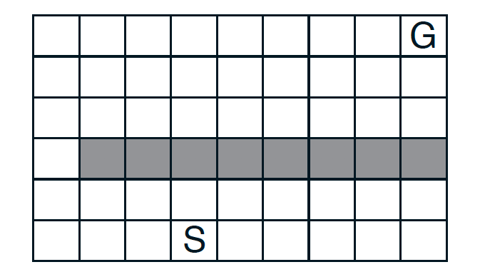
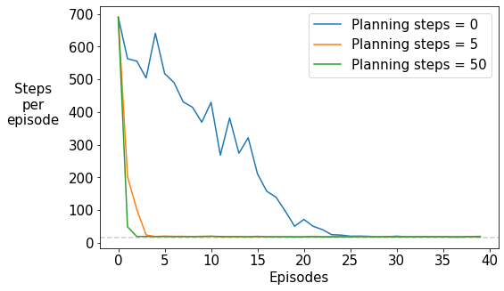
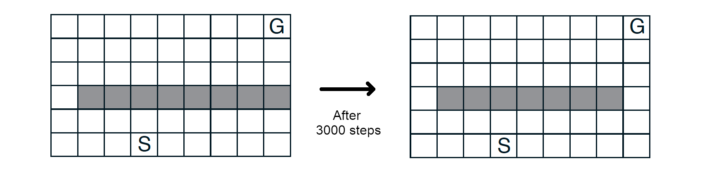
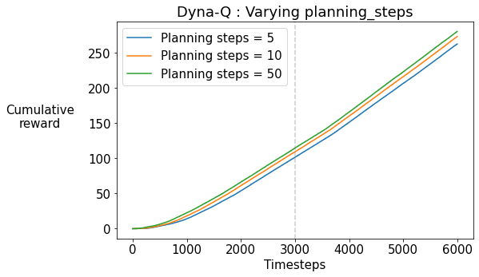
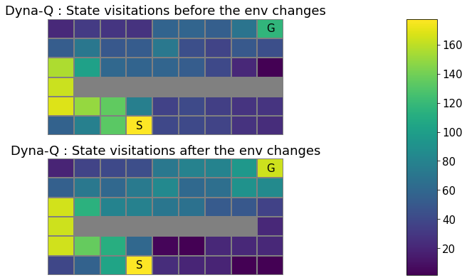
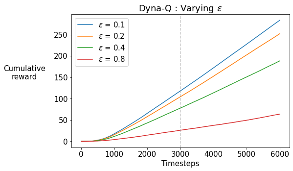
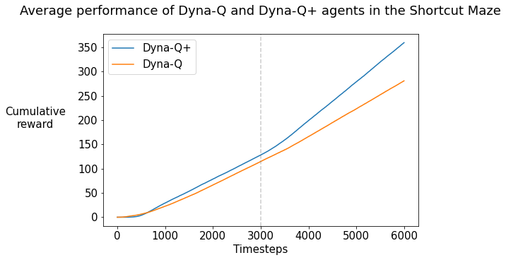
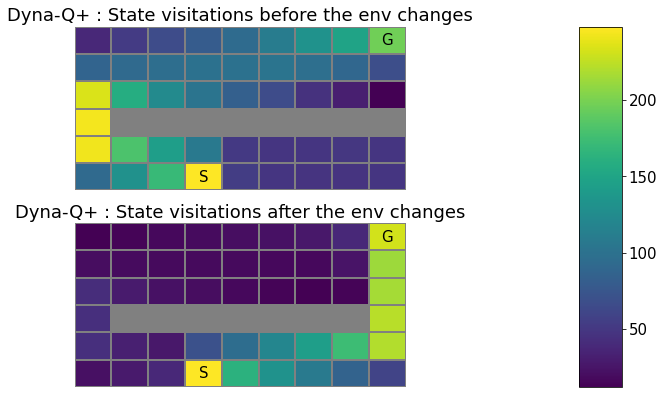

Assignment: Dyna-Q and Dyna-Q+
Welcome to this programming assignment! In this notebook, you will:
- implement the Dyna-Q and Dyna-Q+ algorithms.
- compare their performance on an environment which changes to become ‘better’ than it was before, that is, the task becomes easier.
We will give you the environment and infrastructure to run the experiment and visualize the performance. The assignment will be graded automatically by comparing the behavior of your agent to our implementations of the algorithms. The random seed will be set explicitly to avoid different behaviors due to randomness.
Please go through the cells in order.
The Shortcut Maze Environment
In this maze environment, the goal is to reach the goal state (G) as fast as possible from the starting state (S). There are four actions – up, down, right, left – which take the agent deterministically from a state to the corresponding neighboring states, except when movement is blocked by a wall (denoted by grey) or the edge of the maze, in which case the agent remains where it is. The reward is +1 on reaching the goal state, 0 otherwise. On reaching the goal state G, the agent returns to the start state S to being a new episode. This is a discounted, episodic task with $\gamma = 0.95$.

Later in the assignment, we will use a variant of this maze in which a ‘shortcut’ opens up after a certain number of timesteps. We will test if the the Dyna-Q and Dyna-Q+ agents are able to find the newly-opened shorter route to the goal state.
Packages
We import the following libraries that are required for this assignment. Primarily, we shall be using the following libraries:
- numpy: the fundamental package for scientific computing with Python.
- matplotlib: the library for plotting graphs in Python.
- RL-Glue: the library for reinforcement learning experiments.
Please do not import other libraries as this will break the autograder.
1 | %matplotlib inline |
1 | plt.rcParams.update({'font.size': 15}) |
Section 1: Dyna-Q
Let’s start with a quick recap of the tabular Dyna-Q algorithm.
Dyna-Q involves four basic steps:
- Action selection: given an observation, select an action to be performed (here, using the $\epsilon$-greedy method).
- Direct RL: using the observed next state and reward, update the action values (here, using one-step tabular Q-learning).
- Model learning: using the observed next state and reward, update the model (here, updating a table as the environment is assumed to be deterministic).
- Planning: update the action values by generating $n$ simulated experiences using certain starting states and actions (here, using the random-sample one-step tabular Q-planning method). This is also known as the ‘Indirect RL’ step. The process of choosing the state and action to simulate an experience with is known as ‘search control’.
Steps 1 and 2 are parts of the tabular Q-learning algorithm and are denoted by line numbers (a)–(d) in the pseudocode above. Step 3 is performed in line (e), and Step 4 in the block of lines (f).
We highly recommend revising the Dyna videos in the course and the material in the RL textbook (in particular, Section 8.2).
Alright, let’s begin coding.
As you already know by now, you will develop an agent which interacts with the given environment via RL-Glue. More specifically, you will implement the usual methods agent_start, agent_step, and agent_end in your DynaQAgent class, along with a couple of helper methods specific to Dyna-Q, namely update_model and planning_step. We will provide detailed comments in each method describing what your code should do.
Let’s break this down in pieces and do it one-by-one.
First of all, check out the agent_init method below. As in earlier assignments, some of the attributes are initialized with the data passed inside agent_info. In particular, pay attention to the attributes which are new to DynaQAgent, since you shall be using them later.
1 | # --------------- |
Now let’s create the update_model method, which performs the ‘Model Update’ step in the pseudocode. It takes a (s, a, s', r) tuple and stores the next state and reward corresponding to a state-action pair.
Remember, because the environment is deterministic, an easy way to implement the model is to have a dictionary of encountered states, each mapping to a dictionary of actions taken in those states, which in turn maps to a tuple of next state and reward. In this way, the model can be easily accessed by model[s][a], which would return the (s', r) tuple.
1 | %%add_to DynaQAgent |
Test update_model()
1 | # ----------- |
Next, you will implement the planning step, the crux of the Dyna-Q algorithm. You shall be calling this planning_step method at every timestep of every trajectory.
1 | %%add_to DynaQAgent |
Test planning_step()
1 | # ----------- |
Now before you move on to implement the rest of the agent methods, here are the helper functions that you’ve used in the previous assessments for choosing an action using an $\epsilon$-greedy policy.
1 | %%add_to DynaQAgent |
Next, you will implement the rest of the agent-related methods, namely agent_start, agent_step, and agent_end.
1 | %%add_to DynaQAgent |
Test agent_start(), agent_step(), and agent_end()
1 | # ----------- |
Experiment: Dyna-Q agent in the maze environment
Alright. Now we have all the components of the DynaQAgent ready. Let’s try it out on the maze environment!
The next cell runs an experiment on this maze environment to test your implementation. The initial action values are $0$, the step-size parameter is $0.125$. and the exploration parameter is $\epsilon=0.1$. After the experiment, the sum of rewards in each episode should match the correct result.
We will try planning steps of $0,5,50$ and compare their performance in terms of the average number of steps taken to reach the goal state in the aforementioned maze environment. For scientific rigor, we will run each experiment $30$ times. In each experiment, we set the initial random-number-generator (RNG) seeds for a fair comparison across algorithms.
1 | # --------------- |
1 | # --------------- |
Planning steps : 0
100%|██████████| 30/30 [00:07<00:00, 3.97it/s]
Planning steps : 5
100%|██████████| 30/30 [00:09<00:00, 3.24it/s]
Planning steps : 50
100%|██████████| 30/30 [00:53<00:00, 1.79s/it]

What do you notice?
As the number of planning steps increases, the number of episodes taken to reach the goal decreases rapidly. Remember that the RNG seed was set the same for all the three values of planning steps, resulting in the same number of steps taken to reach the goal in the first episode. Thereafter, the performance improves. The slowest improvement is when there are $n=0$ planning steps, i.e., for the non-planning Q-learning agent, even though the step size parameter was optimized for it. Note that the grey dotted line shows the minimum number of steps required to reach the goal state under the optimal greedy policy.
Experiment(s): Dyna-Q agent in the _changing_ maze environment
Great! Now let us see how Dyna-Q performs on the version of the maze in which a shorter path opens up after 3000 steps. The rest of the transition and reward dynamics remain the same.

Before you proceed, take a moment to think about what you expect to see. Will Dyna-Q find the new, shorter path to the goal? If so, why? If not, why not?
1 | # --------------- |
Did you notice that the environment changes after a fixed number of _steps_ and not episodes?
This is because the environment is separate from the agent, and the environment changes irrespective of the length of each episode (i.e., the number of environmental interactions per episode) that the agent perceives. And hence we are now plotting the data per step or interaction of the agent and the environment, in order to comfortably see the differences in the behaviours of the agents before and after the environment changes.
Okay, now we will first plot the cumulative reward obtained by the agent per interaction with the environment, averaged over 10 runs of the experiment on this changing world.
1 | # --------------- |
Planning steps : 5
100%|██████████| 10/10 [00:10<00:00, 1.08s/it]
Planning steps : 10
100%|██████████| 10/10 [00:16<00:00, 1.70s/it]
Planning steps : 50
100%|██████████| 10/10 [01:19<00:00, 7.99s/it]

We observe that the slope of the curves is almost constant. If the agent had discovered the shortcut and begun using it, we would expect to see an increase in the slope of the curves towards the later stages of training. This is because the agent can get to the goal state faster and get the positive reward. Note that the timestep at which the shortcut opens up is marked by the grey dotted line.
Note that this trend is constant across the increasing number of planning steps.
Now let’s check the heatmap of the state visitations of the agent with planning_steps=10 during training, before and after the shortcut opens up after 3000 timesteps.
1 | # --------------- |
1 | # Do not modify this cell! |

What do you observe?
The state visitation map looks almost the same before and after the shortcut opens. This means that the Dyna-Q agent hasn’t quite discovered and started exploiting the new shortcut.
Now let’s try increasing the exploration parameter $\epsilon$ to see if it helps the Dyna-Q agent discover the shortcut.
1 | # --------------- |
1 | # --------------- |
Agent : Dyna-Q, epsilon : 0.100000
100%|██████████| 30/30 [00:52<00:00, 1.75s/it]
Agent : Dyna-Q, epsilon : 0.200000
100%|██████████| 30/30 [00:49<00:00, 1.65s/it]
Agent : Dyna-Q, epsilon : 0.400000
100%|██████████| 30/30 [00:50<00:00, 1.69s/it]
Agent : Dyna-Q, epsilon : 0.800000
100%|██████████| 30/30 [00:52<00:00, 1.74s/it]

What do you observe?
Increasing the exploration via the $\epsilon$-greedy strategy does not seem to be helping. In fact, the agent’s cumulative reward decreases because it is spending more and more time trying out the exploratory actions.
Can we do better…?
Section 2: Dyna-Q+
The motivation behind Dyna-Q+ is to give a bonus reward for actions that haven’t been tried for a long time, since there is a greater chance that the dynamics for that actions might have changed.
In particular, if the modeled reward for a transition is $r$, and the transition has not been tried in $\tau(s,a)$ time steps, then planning updates are done as if that transition produced a reward of $r + \kappa \sqrt{ \tau(s,a)}$, for some small $\kappa$.
Let’s implement that!
Based on your DynaQAgent, create a new class DynaQPlusAgent to implement the aforementioned exploration heuristic. Additionally :
- actions that had never been tried before from a state should now be allowed to be considered in the planning step,
- and the initial model for such actions is that they lead back to the same state with a reward of zero.
At this point, you might want to refer to the video lectures and Section 8.3 of the RL textbook for a refresher on Dyna-Q+.
As usual, let’s break this down in pieces and do it one-by-one.
First of all, check out the agent_init method below. In particular, pay attention to the attributes which are new to DynaQPlusAgent– state-visitation counts $\tau$ and the scaling parameter $\kappa$ – because you shall be using them later.
1 | # --------------- |
Now first up, implement the update_model method. Note that this is different from Dyna-Q in the aforementioned way.
1 | %%add_to DynaQPlusAgent |
Test update_model()
1 | # ----------- |
Next, you will implement the planning_step() method. This will be very similar to the one you implemented in DynaQAgent, but here you will be adding the exploration bonus to the reward in the simulated transition.
1 | %%add_to DynaQPlusAgent |
Test planning_step()
1 | # Do not modify this cell! |
Again, before you move on to implement the rest of the agent methods, here are the couple of helper functions that you’ve used in the previous assessments for choosing an action using an $\epsilon$-greedy policy.
1 | %%add_to DynaQPlusAgent |
Now implement the rest of the agent-related methods, namely agent_start, agent_step, and agent_end. Again, these will be very similar to the ones in the DynaQAgent, but you will have to think of a way to update the counts since the last visit.
1 | %%add_to DynaQPlusAgent |
Test agent_start(), agent_step(), and agent_end()
1 | # ----------- |
Experiment: Dyna-Q+ agent in the _changing_ environment
Okay, now we’re ready to test our Dyna-Q+ agent on the Shortcut Maze. As usual, we will average the results over 30 independent runs of the experiment.
1 | # --------------- |
Planning steps : 50
100%|██████████| 30/30 [04:21<00:00, 8.72s/it]
Let’s compare the Dyna-Q and Dyna-Q+ agents with planning_steps=50 each.
1 | # --------------- |
1 | # --------------- |

What do you observe? (For reference, your graph should look like Figure 8.5 in Chapter 8 of the RL textbook)
The slope of the curve increases for the Dyna-Q+ curve shortly after the shortcut opens up after 3000 steps, which indicates that the rate of receiving the positive reward increases. This implies that the Dyna-Q+ agent finds the shorter path to the goal.
To verify this, let us plot the state-visitations of the Dyna-Q+ agent before and after the shortcut opens up.
1 | # --------------- |

What do you observe?
Before the shortcut opens up, like Dyna-Q, the Dyna-Q+ agent finds the sole, long path to the goal. But because the Dyna-Q+ agent keeps exploring, it succeeds in discovering the shortcut once it opens up, which leads to the goal faster. So the bonus reward heuristic is effective in helping the agent explore and find changes in the environment without degrading the performance.
Wrapping Up
Congratulations! You have:
- implemented Dyna-Q, a model-based approach to RL;
- implemented Dyna-Q+, a variant of Dyna-Q with an exploration bonus that encourages exploration;
- conducted scientific experiments to empirically validate the exploration/exploitation dilemma in the planning context on an environment that changes with time.
Some points to ponder about:
- At what cost does Dyna-Q+ improve over Dyna-Q?
- In general, what is the trade-off of using model-based methods like Dyna-Q over model-free methods like Q-learning?
1 |